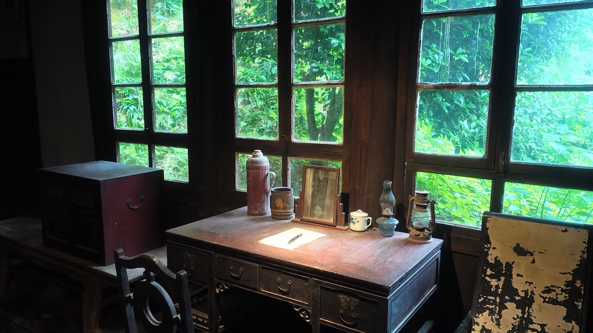
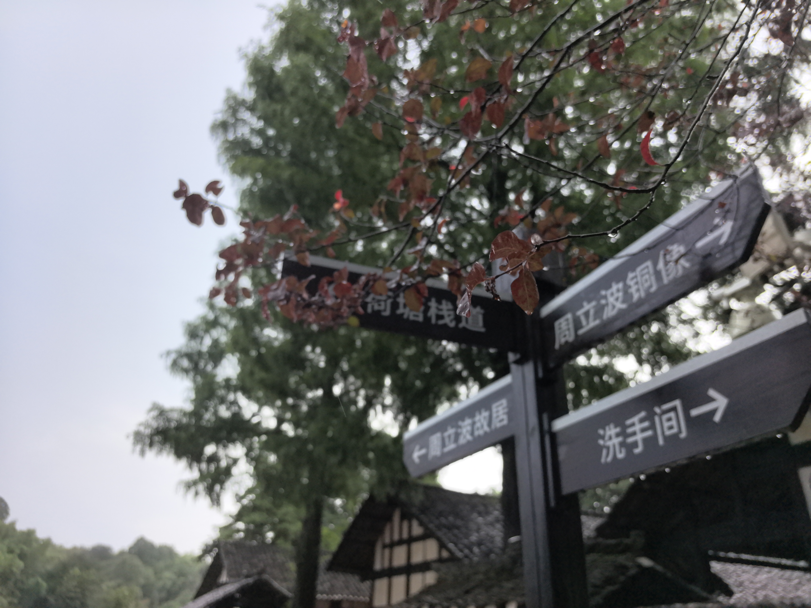
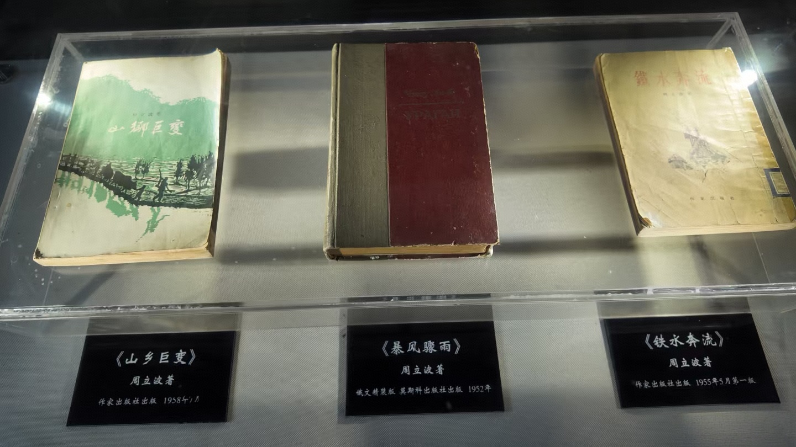

文学与革命的时代交汇
周立波的创作生涯，恰好处在中国社会由旧文明结构向现代国家建构转型的关键时期。战争、土地变革、社会重组和文化重建，都是他作品中反复出现的主题。
这使他的作品既有强烈的政治时代色彩，也有深刻的民间经验与地方记忆。读懂他，就需要把作品放回那个风云变幻的时代背景中去理解。
历史脉络
旧时代的乡土秩序
传统社会中的伦理关系、土地结构和地方习俗，构成了作家观察世界的起点。
革命与改造的风暴
时代巨变打破了旧秩序，社会成员的身份、价值与命运都被重新定义。
文学的时代自觉
作家以小说和叙事回应历史，以文学让时代的冲击变得可见、可感、可记忆。

为什么这段历史值得被记住
通过周立波，我们可以看到中国现代文学如何在时代潮流中成长，也可以理解文化记忆如何被一代代人重新书写。
这也是故居最有价值的意义：它让参观者从一个个体的生活经验，走向更广阔的历史叙事。
历史场景与文献意象


